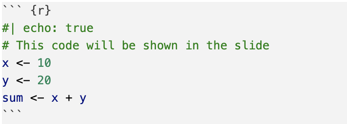
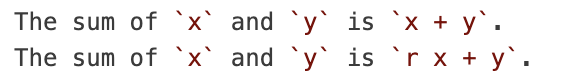
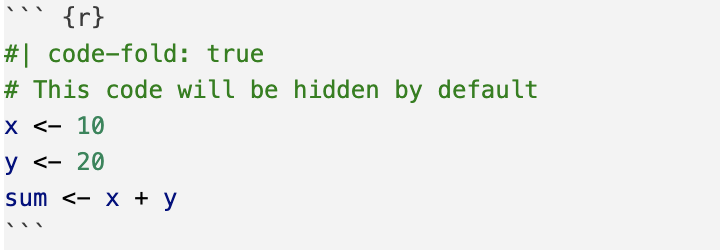
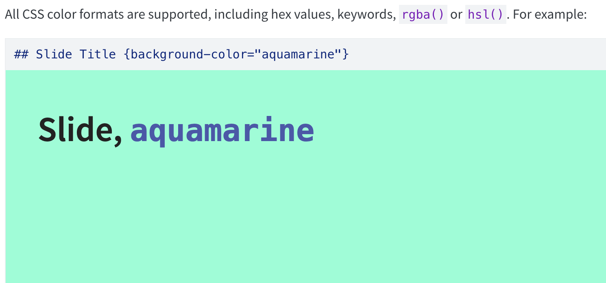
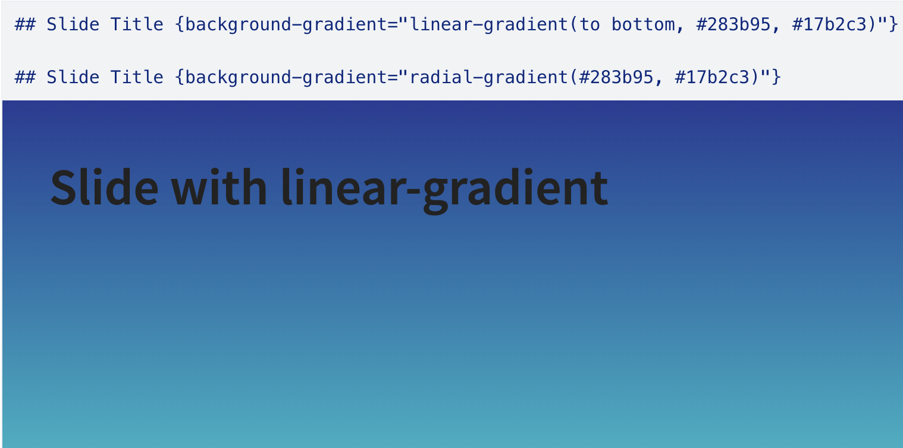
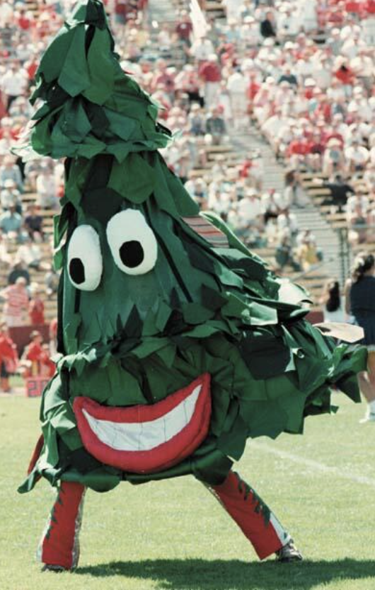

# This code will be shown in the slide
x <- 10
y <- 20
sum <- x + yLab 4
Basics of Functions
Agenda
- Review: Basics of functions, if-else statements, for loops
- Quarto Slides
- How can we make slides?
- Create your first slides
- 3rd Quarto Publication
- Problem Set 3
Review: Basics of Functions
- Functions are defined using the
function()command - Functions can take arguments (inputs) and return values (outputs)
- Example:
add <- function(x, y) {
sum <- x + y
return(sum)
}
result <- add(3, 5)
# Output: 8Review: If Else Statements
- Used for conditional execution of code blocks
- Syntax:
if (condition) {
# code to execute if condition is TRUE
} else {
# code to execute if condition is FALSE
}Review: Example of If Else
light <- "green"
if (light == "green") {
saber <- "Jedi"
} else {
saber <- "Sith"
}
saberReview: For Loops
- Used to iterate over a sequence (like a vector or list)
- Syntax:
for (variable in sequence) {
# code to execute for each element in sequence
}Example of For Loop
sum_vector <- function(vec) {
total <- 0
for (num in vec) {
total <- total + num
}
return(total)
}
sum_vector(c(1, 2, 3, 4, 5)) # Output: 15Quarto Slides
What can we do with slides?
As with our .qmd documents from last labs:
- Text
- Code chunks
- Figures
We use Quarto for slides in STAT 133!
Also:
- In-line code
- Code folding
- Slide backgrounds and gradients
- Bulleted lists and incremental bullets
And much more!
YAML Heading of a Slide Document
If QuartoPub not working, embed-resources to true to make sure all resources are included in the published document.
demo-pub2.qmd
---
title: "Demo Publication 3"
subtitle: "First Contact with Quarto Slides"
author: "Your Name"
format:
revealjs:
embed-resources: true
---Formatting Slides
- Quarto allows you to create slides using markdown syntax
- Use
#or##to separate slides - Example:
# Slide 1 - Main Heading
Content of the slide goes here.
## Slide 2 - Smaller Heading
More content here.
### Slide 2 - Sub-subheadingSlide 1 - Main Heading
Slide 2 - Smaller Heading
Slide 2 - Sub-subheading
Adding code
Code is added the same way as in regular qmd files, using code chunks.
# Example code chunk
x <- 10
y <- 20
sum <- x + y
But we can also do a lot more with code chunks in slides, such as…
Echo True
By default, code chunks in slides will show the code but not the output. You can control this behavior using the echo option.

In-line code
You can also include in-line code using backticks:

Talk to a partner: what would these lines output?
In-line code
This code outputs:
The sum of x and y is x + y.
The sum of x and y is 30.
Useful for:
- showing code without running it
- showing formulas or calculations without needing a full code chunk
Code Folding
You can fold code chunks to hide them by default and allow the audience to expand them if they want to see the code.
In YAML header:
---
title: "Demo Publication 3"
subtitle: "First Contact with Quarto Slides"
author: "Your Name"
format:
revealjs:
code-fold: true
embed-resources: true
---Code Folding
In each code block that you want to fold:

Backgrounds
Another formatting option is to add backgrounds to your slides. You can use either a single color or a gradient.
Adding Slide Backgrounds - Single Color

Adding Slide Backgrounds - Gradient

Transitions by Slide
You can specify the transition and/or transition-speed for an individual slide:
## Slide Title {transition="fade" transition-speed="fast"}
You can also specify separate in and out transitions, for example:
## Slide Title {transition="fade-in slide-out"}Incremental Bullets
Last week: used ::: to create columns. This week: use ::: to create incremental bullets.
::: {.incremental}
- First bullet
- Second bullet
- Third bullet
:::Incremental Bullets
- First bullet
- Second bullet
- Third bullet
These are helpful to reveal information step by step, keeping the attention on the current point being discussed.
Quarto Pub
Requirements:
Your slides must contain:
Title slide
At least one figure (web image or a local image)
Slide backgrounds (color and gradient)
At least one incremental feature
Use in-line code and code folding features
A function that decides the college of the student depending on its mascot (Bear = UC Berkeley, Tree = Stanford) using an if-else statement

Like last week: Folder stat133/
stat133/
labs/
lab1/
lab2/
lab3/
psets/
pset1/
pset2/Terminal in IDE
Launch your IDE (Positron or RStudio)
Launch your Terminal (next to the Console tab)
cdto yourstat133/labs/foldercreate a folder for this lab:
mkdir lab4cdtolab4
. . .
Terminal
# create an empty qmd file "demo-pub3.qmd"
# (to be used for your 2nd Quarto demo publication)
touch demo-pub3.qmdPublishing Steps
Assume I have a file called demo-pub3.qmd opened in Positron. To publish my qmd file to my QuartoPub account I follow these steps:
- Go to the Terminal tab.
- Make sure your working directory contains the qmd file.
- Type command:
quarto publish demo-pub3.qmd - Choose provider Quarto Pub and press return (enter)
- Publish with default account (linked to my email address)
- Optionally: you can change the name of the document
- Press return (enter)
. . .
Once published, there will be an associated link (URL), something like: https://username.quarto.pub/demo-pub-3
Submission to bCourses
Submit the URL (link) of your published document to the corresponding assignment in bCourses.
See Assignments tab > Quarto Publications > Pub3
Problem Set 3
Pset 3
Available in bCourses:
See Assignments tab > Problem Sets > PS3
You’ll find 2 files:
ps3.html: instructionsps3.qmd: template file to write your answers
. . .
In case of trouble: Go to Files tab, folder problem-sets, folder ps3, and download the qmd file.
Sometimes Safari blocks or denies you access. If this is the case you may want to use another browser (e.g. Chrome).
Pset 3 Submission
- Submit your
qmdandhtmlfiles to bCourses. - Use assignment problem set ps3
- Graded credit / no-credit
- Credit for evidence of earnest engagement (just don’t submit a blank or empty template file)